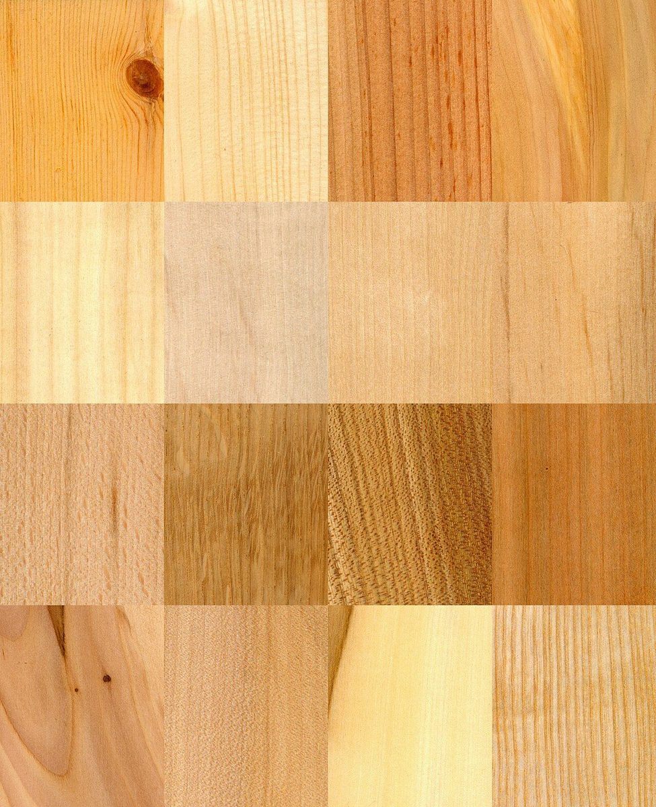

02 / 店のこと
お店について確認できているのは、所在地・電話番号・Instagramのアカウントです。
このページの「想像したこと」は、制作側が想像して書いたものです。お店の実際の様子・考え・メニューとは関係がありません。
上段
分かっていること
- 店名は「カフェうえむら」、業種はカフェ
- 所在地は福岡県うきは市吉井町744-1(〒839-1321)
- 電話番号は090-3347-2618
- Instagramのアカウントは @cafe_uemura
- 営業時間・定休日・メニュー・価格・ご予約・駐車場は準備中

下段
想像したこと
屋号の由来は分かりません。制作側は「うえ」の音から「上」を連想し、上下が入れ替わる札のかたちでページを組みました。お店の理念や由来とは無関係の、制作側の連想です。
写真は、木や粉、道具といった質感のクローズアップを並べました。いずれもお店のものではなく、お店の様子を示すものでもありません。

